কৃষি, স্বাস্থ্য, শিক্ষাসহ গ্রামীণ জনগোষ্ঠীর জীবন-জীবিকার সামগ্রিক মানোন্নয়নে তথ্যপ্রযুক্তির ক্রমবর্ধমান প্রসার সম্পর্কে আজ আর কারোরই সংশয় নেই। কম্পিউটার, ল্যাপটপ, মোবাইল, ইন্টারনেট এসব কিছুই তথ্যপ্রযুক্তির সারথি হিসেবে আমাদের দৈনন্দিনের কাজকে করেছে গতিশীল। ডিজিটাল শব্দটি যেন আজ জীবনেরই একটি অংশ হয়ে গেছে। অথচ বছর কয়েক আগে বর্তমান সরকার যখন ‘ভিশন ২০২১’ রূপকল্পের মধ্য দিয়ে ‘ডিজিটাল বাংলাদেশ’ গড়ার প্রত্যয় ঘোষণা করে তখন অনেকের কাছে এটি বিস্ময়কর মনে হয়েছিল। গত সাত বছরে বর্তমান সরকারের সুদূরপ্রসারি পদক্ষেপ, ঐকান্তিক প্রচেষ্টা এবং সে সাথে সরকারি-বেসরকারি বিভিন্ন প্রতিষ্ঠানের সমন্বিত উদ্যোগের ফলেই দেশ আজ উন্নয়নের রোল মডেল হিসেবে বিশ্বের বুকে মাথা উঁচু করে দাঁড়িয়েছে। তথ্যপ্রযুক্তির মাধ্যমে ছোট্ট একটি যন্ত্র মোবাইল ফোনের মাধ্যমে আমরা আক্ষরিক অর্থেই সারা বিশ্ব জগতকে দেখার সুযোগ পাচ্ছি। প্রায় ১৬ কোটি মানুষের এ দেশে মোবাইল ফোন ব্যবহার করছেন প্রায় ১১ কোটি ৭৭ লাখ মানুষ, ইন্টারনেট ব্যবহার করছেন প্রায় ৬ কোটি ২২ লাখ জন এবং তন্মধ্যে মোবাইলেই ইন্টারনেট ব্যবহার করেন প্রায় ৫ কোটি ৮৪ লাখ মানুষ (বিটিআরসি; আগস্ট ২০১৬)। দেশের সামগ্রিক উন্নয়নের সাথে মানুষের ক্রয় ক্ষমতা যেমন দিন দিন বাড়ছে, সে সাথে বাড়ছে আধুনিক প্রযুক্তি ও উপকরণ ব্যবহারও। এক পরিসংখ্যানে দেখা গেছে, ২০১৫ সালে বাংলাদেশে স্মার্টফোনের ব্যবহার প্রায় ২০% যা ২০১৮ সালের শুরুতে ৪০% হবে বলে ধারণা করা হচ্ছে। এসব তথ্য উপাত্ত যথার্থই প্রমাণ করে তথ্যপ্রযুক্তির ব্যবহারে আমরা মোটেই পিছিয়ে নেই বরং বিশ্ব মানচিত্র আমরা একটি উদাহরণ সৃষ্টিকারী দেশ হিসেবে পরিচিতি লাভ করেছি। সেবা গ্রহীতার কষ্ট, খরচ ও সময় লাঘব করে বিভিন্ন নাগরিক সেবা যেমন-অনলাইনে পরীক্ষার ফল প্রদান, ফরম পূরণ, বিদেশে চাকরি বা আত্মীয়-স্বজনের সাথে যোগাযোগ, বিশেষজ্ঞদের পরামর্শ গ্রহণ, উপযুক্ত কর্তৃপক্ষের কাছে সমস্যা তুলে ধরে সমাধান গ্রহণ এসব আজ নিত্য ঘটনা। এসব সাফল্যের পথ ধরেই আইসিটি ফর ডেভেলপমেন্ট অ্যাওয়ার্ড ২০১৬, আইটিইউ অ্যাওয়ার্ড ২০১৫সহ সম্মানজনক অনেক সম্মাননায় ভূষিত হয়েছে বাংলাদেশ। তথ্যপ্রযুক্তির এ অপার সম্ভাবনা আমাদের কৃষিকেও করেছে সমৃদ্ধ। কৃষিতে তথ্যপ্রযুক্তি তথা ই-কৃষি আমাদের কৃষি উন্নয়নের একটি অবিচ্ছেদ্য অংশ হয়ে গেছে। সাধারণ অর্থে ই-কৃষি বলতে সামগ্রিক কৃষি উন্নয়নে তথ্যপ্রযুক্তির ব্যবহারকেই বোঝায়। আরও নির্দিষ্ট করে বললে ফসল উৎপাদন, প্রক্রিয়াজাতকরণ, বিপণনসহ প্রতিটি পর্যায়ে তথ্যপ্রযুক্তির সাহায্যে সঠিক কলাকৌশল জেনে টেকসই কৃষি উৎপাদন নিশ্চিত করাকে বোঝায়। সনাতন পদ্ধতিতে তথ্য গ্রহণের পাশাপাশি আমাদের কৃষক-কৃষাণীরা তথ্যপ্রযুক্তি তথা ই-কৃষিকেও সাদরে গ্রহণ করেছেন। পরিসংখ্যানে দেখা গেছে, ৮৪ শতাংশ গ্রামীণ কৃষক মোবাইল ফোন ব্যবহার করেন। ৬৬ শতাংশ কৃষক পরিবার একের অধিক মোবাইল ফোন ব্যবহার করে থাকেন। তথ্যপ্রযুক্তি ব্যবহার করে প্রতি পরিবারের আয় বেড়েছে গড়ে ১০ হাজার ৫০০ টাকা (অরগাকোয়েস্ট জরিপ ২০১৩, ক্যাটালিস্ট)। সাম্প্রতিক সময়ে কৃষিতে তথ্যপ্রযুক্তি ব্যবহারের এ রেখাচিত্র আরও ঊর্ধ্বমুখী হয়েছে। কৃষি মন্ত্রণালয় ও এর অধীন সংস্থাগুলো ই-কৃষির প্রসারে অগ্রণী ভূমিকা পালন করে চলেছে। প্রায় প্রতিটি সংস্থাই প্রদেয় নাগরিক সেবাগুলোকে ই-সার্ভিসে পরিণত করে সময়মাফিক গুণগত সেবা প্রদানের প্রচেষ্টা অব্যহত রেখেছে। এসব উদ্যোগের ফলে কৃষকসহ আপামর কৃষিজীবীরা যেমন একদিকে উপকৃত হচ্ছেন অন্যদিকে কৃষি সংশ্লিষ্ট নীতিনির্ধারকদের কাছেও কর্মপন্থা প্রণয়নে প্রয়োজনীয় তথ্যের উৎস হিসেবে কাজ করছে। কৃষি মন্ত্রণালয়ের বিভিন্ন সংস্থার উল্লেখযোগ্য কিছু ই-কৃষি সেবা সম্পর্কে তথ্য দেয়া হলো-
কৃষি সম্প্রসারণ অধিদপ্তর (ডিএই)
কৃষি সেবা দানকারী প্রতিষ্ঠানগুলোর মধ্যে কৃষি সম্প্রসারণ অধিদপ্তর সর্ববৃহৎ সংস্থা। সরাসরি সেবা দানের পাশাপাশি অনলাইন ও ডিজিটাল পদ্ধতিতে সেবা প্রদানের জন্য প্রতিষ্ঠানটির বেশ কিছু সেবা রয়েছে। জমিতে বছরব্যাপী পরিকল্পনামাফিক চাষবাস করার জন্য ডিজিটাল ক্রপ ক্যালেন্ডার (http://cropcalendar.marssil.com) সেবাটি চালু রয়েছে। কৃষক ফসল প্যাটার্ন পছন্দ করার পর একটি কার্ড প্রিন্ট করতে পারবে যেখানে তারিখসহ চাষাবাদ পদ্ধতি, সার, সেচ, বালাই দমন ও অন্যান্য ব্যবস্থাপনা লেখা থাকবে। ছবিভিত্তিক কৃষকের চাষাবাদ পদ্ধতি কৃষকের ডিজিটাল ঠিকানা (http:/qais.ml/) এর মাধ্যমে কৃষক ছবি দেখে ১২০টি ফসলের উন্নত চাষ প্রণালি, সার ও পানি ব্যবস্থাপনা এবং বালাই ব্যবস্থাপনা এসব সম্পর্কে জানতে পারবে। ছবি দেখে বালাই শনাক্তকরণ এবং তার ব্যবস্থাপনার বর্ণনা অনলাইনে কৃষকের .gov.bd/krishokerjanala/home.html) থেকে পাওয়া যাবে। এখানে ছবি দেখে ব্যবহারকারী বিভিন্ন ফসলের যে কোনো সমস্যা নিজে নিজেই চিহ্নিত করতে পারবেন এবং চিহ্নিত ছবিতে ক্লিক করলেই সমাধান ও ব্যবস্থাপনা পরামর্শ পাওয়া যাবে। রোগ চিহ্নিত করার পর তার জন্য কৃষি সম্প্রসারণ অধিদপ্তরের অনুমোদিত রাসায়নিক বা জৈব বালাইনাশকের নাম জানার জন্য আছে বালাইনাশক নির্দেশিকা বা Pesticide Prescriber (http://pest2.bengalsols.com/)। ইংরেজি ও বাংলা উভয় ভাষাতেই এ ওয়েবপেজ থেকে সেবা নেয়া যাবে। গুগল প্লে স্টোর থেকেও এর মোবাইল অ্যাপসটি ডাউনলোড করা যাবে।
কৃষি তথ্য সার্ভিস (এআইএস)
প্রিন্ট, ইলেকট্রনিক ও আইসিটি মাধ্যমে কৃষি সংশ্লিষ্টদের কাছে সময়োপযোগী কৃষি তথ্য পৌঁছানোই কৃষি তথ্য সার্ভিসের মূল দায়িত্ব। এ লক্ষ্যে কৃষি তথ্য সার্ভিস থেকে পরিচালিত কৃষি কল সেন্টারে যে কোনো অপারেটর থেকে ১৬১২৩ নম্বরে প্রতি মিনিট ০.২৫ টাকা (ভ্যাট ও সম্পূরক শুল্ক ছাড়া) ব্যয়ে ফোন করে কৃষি/মৎস্য/প্রাণিসম্পদ বিষয়ে বিশেষজ্ঞদের কাছ থেকে তাৎক্ষণিক সমাধান নিতে পারবেন। শুক্রবার ও সরকারি বন্ধের দিন ছাড়া সপ্তাহের অন্যান্য দিন সকাল ৯টা থেকে বিকাল ৫টা পর্যন্ত এ সেবাটি দেয়া হচ্ছে। কৃষি তথ্য সার্ভিসের ওয়েবসাইটে (www.ais.gov.bd)-এ কৃষি বিষয়ক প্রয়োজনীয় তথ্যের পাশাপাশি অনলাইনে প্রশ্ন করে স্বল্পতম সময়ে সে প্রশ্নের সমাধান জানতে পারেন। তৃণমূল পর্যায়ে তথ্য বিস্তারের লক্ষ্যে কৃষি তথ্য সার্ভিস দেশব্যাপী ৪৯৯টি কৃষি তথ্য ও যোগাযোগ কেন্দ্র (এআইসিসি) প্রতিষ্ঠা করেছে। এআইসিসি থেকে কৃষক ও কৃষি সংশ্লিষ্ট ব্যক্তিবর্গ তথ্য সেবা গ্রহণ করছেন। কৃষি তথ্য সার্ভিস থেকে নির্মিত মাল্টিমিডিয়া ই-বুকের মাধ্যমে বিভিন্ন ফসল ও প্রযুক্তি সম্পর্কে সহজে তথ্য নেয়া যায়। কৃষি তথ্য সার্ভিসের দুইটি মোবাইল অ্যাপস রয়েছে। বিভিন্ন ফসলের উৎপাদন প্রযুক্তিভিত্তিক তথ্যসমৃদ্ধ একটি মোবাইল অ্যাপটি গুগল প্লে স্টোর থেকে Agriculture Info Service নামে সার্চ করে বিনামূল্যে ডাউনলোড করে ব্যবহার করা যায়। পাশাপাশি জনপ্রিয় মাসিক কৃষিকথা পত্রিকাটির একটি মোবাইল অ্যাপ তৈরি করা হয়েছে। এর ফলে সহজেই ব্যবহারকারীরা জনপ্রিয় এ ম্যাগাজিনটি মোবাইল ফোনেই পড়তে পারবেন। গুগল প্লে স্টোর থেকে কৎরংযরশড়ঃযধ নামে সার্চ করে এটি বিনামূল্যে ডাউনলোড করা যায়। এসবের পাশাপাশি বরগুনা জেলার আমতলীতে প্রতিষ্ঠা করেছে কমিউনিটি রেডিও কৃষি রেডিও এফএম ৯৮.৮ যেখান থেকে দৈনিক ০৮ ঘণ্টা প্রচারিত অনুষ্ঠানের মাধ্যমে সংশ্লিষ্ট এলাকার জনসাধারণের চাহিদাভিত্তিক তথ্যসেবা পূরণে সচেষ্ট রয়েছে।
বাংলাদেশ কৃষি গবেষণা কাউন্সিল (বিএআরসি)
কৃষি মন্ত্রণালয়ের অধীন বাংলাদেশ কৃষি গবেষণা কাউন্সিল জাতীয় কৃষি গবেষণা সিস্টেমের সবোর্চ্চ প্রতিষ্ঠান। ই-কৃষির উল্লেখযোগ্য উদ্যোগগুলো হলো-ভূমির উপযোগিতাভিত্তিক ফসল অঞ্চল (http:/ cropzoning. barcapps.gov.bd)-এর ফলে ভূমির উপযোগিতা অনুসারে বিভিন্ন ফসল অঞ্চলে নির্দিষ্ট শস্য উৎপাদনের সুযোগ তৈরি হয়েছে। এতে উপজেলাওয়ারি ১৭টি ফসলের উপযোগিতা শ্রেণী অনুযায়ী ম্যাপ প্রস্তুত এবং টেবিলের মাধ্যমে উৎপাদন উপযোগী এলাকা উপস্থাপন করা হয়েছে। এআরএমআইএস (http:/ armis. barcapps.gov.bd) বাংলাদেশে কৃষি গবেষণার সাথে সংযুক্ত সব প্রতিষ্ঠানের গবেষণা সংবলিত তথ্য একটি কেন্দ্রীয় ডাটাবেজে সংরক্ষণের উদ্দেশ্যে Agricultural Research Management Information System (ARMIS) বাস্তবায়ন করা হয়েছে। স্বাধীনতার পর থেকে এ পর্যন্ত ২৬,৫০০ গবেষণা তথ্য ডাটাবেজটিতে সংরক্ষণ করা হয়েছে। গবেষক, নীতিনির্ধারক, শিক্ষক, শিক্ষার্থী, বিজ্ঞানীদের জন্য ডাটাবেজটি কৃষি গবেষণার রেফারেন্স গাইড হিসেবে ব্যবহৃত হবে। বিএআরসি আর্কাইভ (http://archive.barcapps.gov.bd) বিএআরসির বিভিন্ন বই, নিউজলেটার, জার্নাল, প্রকাশনা, পলিসি ডকুমেন্ট, নন-কনভেনশনাল ডকুমেন্ট এসবের সংগ্রহশালা তৈরির জন্য অনলাইন আর্কাইভ তৈরি করা হয়েছে।
বাংলাদেশ কৃষি উন্নয়ন কর্পোরেশন (বিএডিসি)
অটোমেটিক গ্রাউন্ডওয়াটার লেভেল অ্যান্ড স্যালাইনিটি মনিটরিং সিস্টেমের সাহায্যে দেশের বেশ কয়েকটি স্থানের ভূগর্ভস্থ পানির লেভেল এবং লবণাক্ততার পরিমাণ সংক্রান্ত উপাত্ত সার্ভারের মাধ্যমে কম্পিউটার মনিটরে হাইড্রোগ্রাফ বা রিপোর্ট আকারে প্রদর্শন এবং সংরক্ষণ করা সম্ভব হচ্ছে। এছাড়াও গ্রাউন্ডওয়াটার জোনিং ম্যাপ হলো ভূগর্ভস্থ পানি ব্যবস্থাপনার জন্য একটি জিআইএসভিত্তিক ডিজিটাল ম্যাপ। এতে ৩০০০টি নলকূপের অবস্থান চিহ্নিত করা আছে। বিএডিসির বীজ প্রক্রিয়াজাতকরণ ও সংরক্ষণ বিভাগ (বীপ্রস) সংক্রান্ত সফটওয়্যারটির মাধ্যমে বিএডিসির বিভিন্ন বীজের (আউশ, আমন, বোরো, গম, ভুট্টা ও অন্যান্য বীজ) ভবিষ্যতে উৎপাদন লক্ষ্যমাত্রা, সংগ্রহ, মজুদ, বিতরণ, কৃষক পর্যায়ে প্রাপ্যতা সম্পর্কে যে কোনো ব্যক্তি-প্রতিষ্ঠান জানতে পারবে।
বাংলাদেশ কৃষি গবেষণা ইনস্টিটিউট (বিএআরআই)
বাংলাদেশ কৃষি গবেষণা ইনস্টিটিউট (বারি), উদ্ভাবিত কৃষি প্রযুক্তিসমূহের তথ্য সমৃদ্ধ ‘কৃষি প্রযুক্তি ভাণ্ডার’ নামে একটি মোবাইল অ্যাপ তৈরি করেছে। মূলত এটি কৃষি প্রযুক্তিভিত্তিক একটি মোবাইল অ্যাপ্লিকেশন। এ অ্যাপসটি স্মার্টফোন ব্যবহারকারীরা তাদের মোবাইল হ্যান্ডসেটে ব্রাউজ করে বিভিন্ন ফসল উৎপাদনের বিস্তারিত প্রযুক্তি সম্পর্কে জানতে পারবেন। অধিকতর তথ্যের জন্য উদ্ভাবিত প্রযুক্তি সংক্রান্ত প্রশ্ন জানাতে পারবেন। প্রয়োজনে সংশ্লিষ্ট বিশেষজ্ঞের সাথে সরাসরি কলের মাধ্যমে পরামর্শ নেয়া যায়। এ অ্যাপসটি BARI Application কৃষি প্রযুক্তি ভাণ্ডার নামে গুগল প্লে স্টোর ও উইন্ডোজ স্টোর থেকে এন্ড্রয়েডভিত্তিক মোবাইল এবং উইন্ডোজভিত্তিক মোবাইলে এ ডাউনলোড করে অফ লাইনে ব্যবহার করা যায়। এছাড়াও অনলাইনে যে কোনো স্মার্টফোনেরব্রাউজারে baritechnology.org/m ঠিকানা থেকে এ অ্যাপসের ওয়েব ভার্সনটি ব্যবহার করা যায়।
বাংলাদেশ ধান গবেষণা ইনস্টিটিউট (ব্রি)
বাংলাদেশ ধান গবেষণা ইনস্টিটিউট (ব্রি) কর্তৃক উদ্ভাবিত জাত ও ব্রি প্রযুক্তিগুলো মাধ্যমে ‘রাইস নলেজ ব্যাংক’ নামে একটি ডায়নামিক মোবাইল অ্যাপ তৈরি করা হয়েছে, যা মোবাইলভিত্তিক অনলাইন জ্ঞান ভাণ্ডার যাতে আধুনিক ধান চাষ সম্পর্কিত প্রযুক্তি ও কলাকৌশল সন্নিবেশিত আছে। অ্যাপটি ‘Rice Knowledge Bank’ নামে গুগল প্লে স্টোর ও উইন্ডোজ স্টোর থেকে এন্ড্রয়েডভিত্তিক মোবাইলে ফ্রি ডাউনলোড করে ব্যবহার করা যাবে। এছাড়া যে কোনো স্মার্টফোন, ট্যাব, ল্যাপটপ কম্পিউটারের ব্রাউজার http://knowledgebank-brri.org ঠিকানা থেকে এ অ্যাপসের ওয়েব ভার্সনটি ব্যবহার করা যাবে।
মৃত্তিকা সম্পদ উন্নয়ন ইনস্টিটিউট (এসআরডিআই)
মৃত্তিকা সম্পদ উন্নয়ন ইনস্টিটিউটথেকে অনলাইন ফার্টিলাইজার রিকমেন্ডেশন সিস্টেম নামক একটি সফটওয়্যার প্রস্তুত করা হয়েছে, যার মাধ্যমে সুষম সার সুপারিশ সেবা প্রদান করা হচ্ছে। দেশের সব উপজেলার জন্য এ কার্যক্রম চালু রয়েছে। দেশের যে কোনো প্রান্তের একজন কৃষক জমি ও স্থানের কয়েকটি তথ্য দিয়ে মৃত্তিকা উর্বরতা মানের ভিত্তিতে তার চাহিত ফসলের জন্য সুষম সার সুপারিশ পেতে পারেন। মৃত্তিকা সম্পদ উন্নয়ন ইনস্টিটিউটের ওয়েবসাইটে (www.srdi.gov.bd) প্রবেশ করে তথ্যপ্রযুক্তি সেবার মধ্যে ‘অনলাইন সার সুপারিশ’ লিংকটিতে ক্লিক করার মাধ্যমে এ সার্ভিসের সুবিধা পাওয়া যাবে। অনলাইন ফার্টিলাইজার রিকমেন্ডেশন সিস্টেম প্রবর্তনের ফলে ধান ফসলের ফলন ১৫-২৫% এবং অন্যান্য ফসলের ফলন ১৫-২০% বৃদ্ধি পায়, সারের অপচয় কমে, ফসলের পুষ্টিমান বাড়ে এবং মাটির স্বাস্থ্য ভালো থাকে।
কৃষি বিপণন অধিদপ্তর (ডিএএম)
ই-কৃষি সেবা বিস্তারের লক্ষ্যে কৃষি বিপণন অধিদপ্তর কর্তৃক ৬৪টি জেলা থেকে সংগৃহীত খুচরা, পাইকারি ও কৃষকপ্রাপ্ত বাজার দর দৈনিক, সাপ্তাহিক ও পাক্ষিক ভিত্তিতে অনলাইনের মাধ্যমে প্রেরণ করা হয়, যা পরবর্তীতে প্রয়োজনীয় প্রক্রিয়াকরণের মাধ্যমে www.dam.gov.bd ওয়েবসাইটে সহজলভ্য করা হয়ে থাকে।
জাতিসংঘের খাদ্য ও কৃষি সংস্থা (এফএও) এর কৃষি উৎপাদন বিষয়ক বৈশ্বিক তথ্য ভাণ্ডার স্ট্যাটিসক্যাল পকেটবুক ২০১৫ অনুযায়ী বাংলাদেশ চাষের মাছ উৎপাদনে বিশ্বে চতুর্থ, সবজি চাষের জমি বৃদ্ধির হারে বাংলাদেশ এখন বিশ্বে প্রথম আর উৎপাদন বৃদ্ধির হারে তৃতীয়। স্বাধীনতার পর থেকে সবজি উৎপাদন বেড়েছে পাঁচগুণ। ফল উৎপাদন বৃদ্ধির দিক থেকেও বাংলাদেশ এখন বিশ্বে শীর্ষে রয়েছে। ধান উৎপাদনে বিশ্বে আমরা চতুর্থ অবস্থানে রয়েছি, দানাদার খাদ্যে স্বয়ংসম্পূর্ণতা অর্জন করে বিদেশে চালও রপ্তানি করছি। সরকারের সময়োপযোগী নীতি ও পদক্ষেপ এবং সে সাথে কৃষিবিদ, কৃষক, বিজ্ঞানী, সম্প্রসারণ কর্মী সবার সম্মিলিত এসব প্রচেষ্টার ফলেই কৃষির এ যুগান্তকারী সাফল্য অর্জিত হয়েছে। নিঃসন্দেহে ই-কৃষির প্রসার এ সাফল্য অর্জনের অন্যতম সারথী হিসেবে কাজ করেছে। অত্যন্ত আশার কথা আমাদের কৃষিতে তরুণ কৃষক, উদ্যোক্তারা এখন সংযুক্ত হচ্ছেন। প্রযুক্তিবান্ধব এসব তারুণ্যের অমিত শক্তির সাথে তথ্যপ্রযুক্তির অপার সম্ভাবনার মিথস্ক্রিয়ায় বাংলার কৃষি হবে আরও সমৃদ্ধ, দিগন্তজোড়া ফসলের সোনালি মাঠে বিস্তৃত হবে কৃষকের হাসি।
কৃষিবিদ মোহাম্মদ জাকির হাসনাৎ*
*তথ্য অফিসার (পিপি), কৃষি তথ্য সার্ভিস, খামারবাড়ি, ঢাকা
 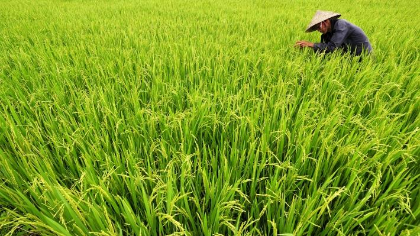
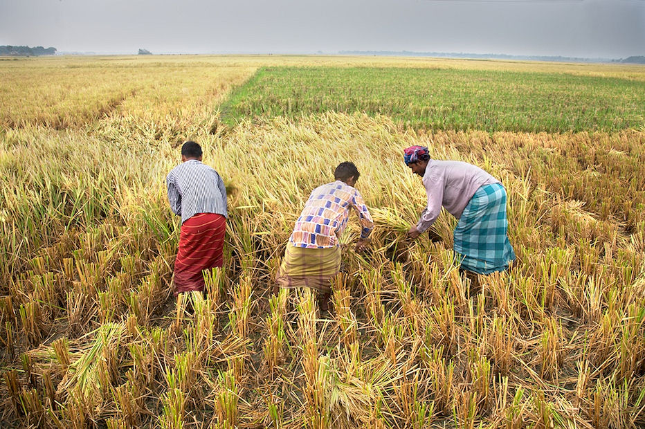
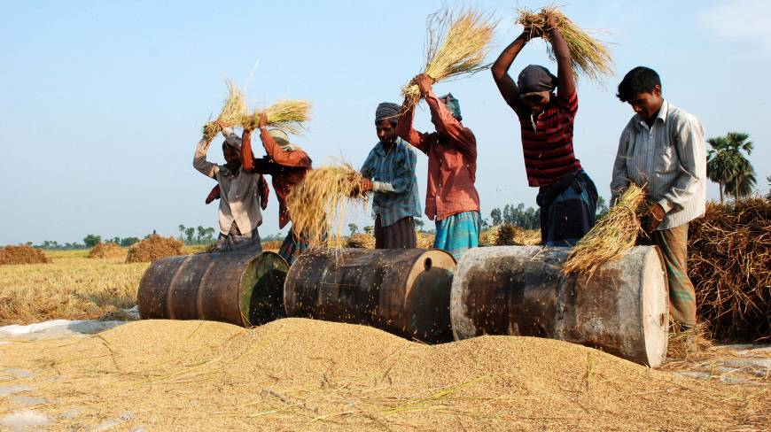
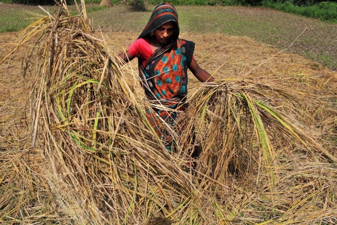
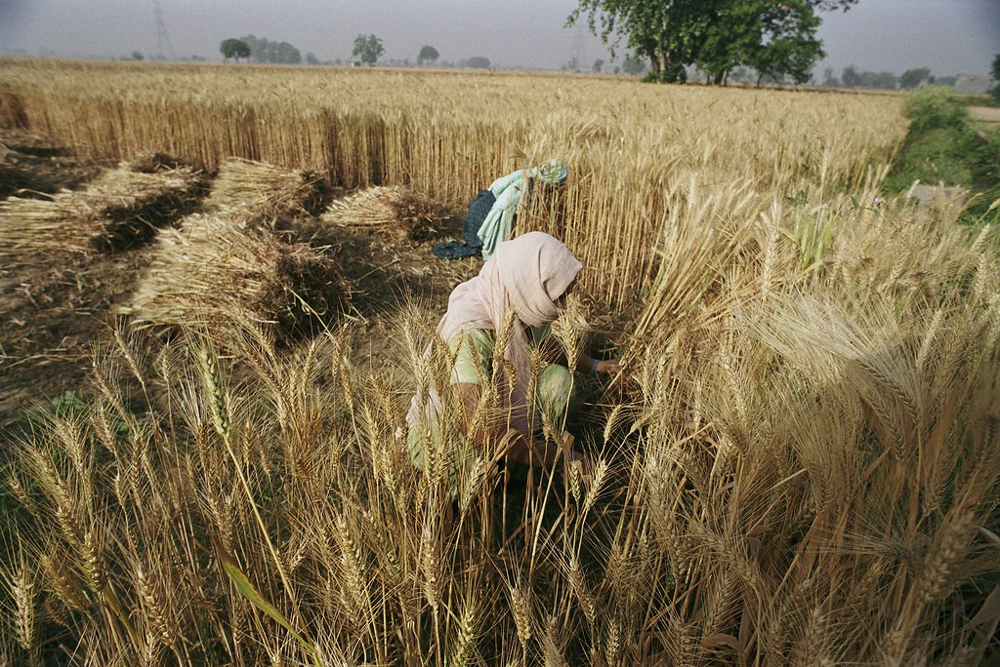
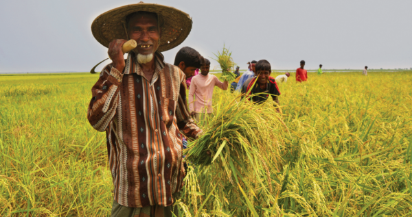
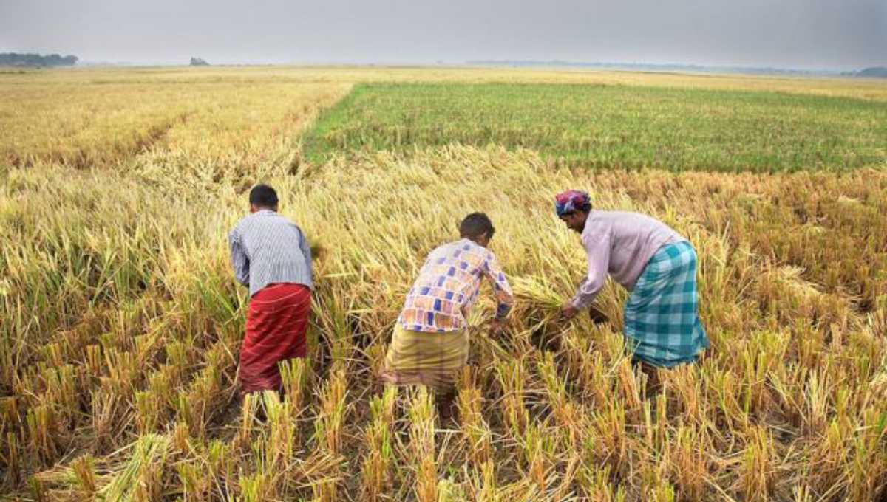
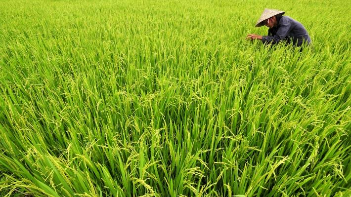
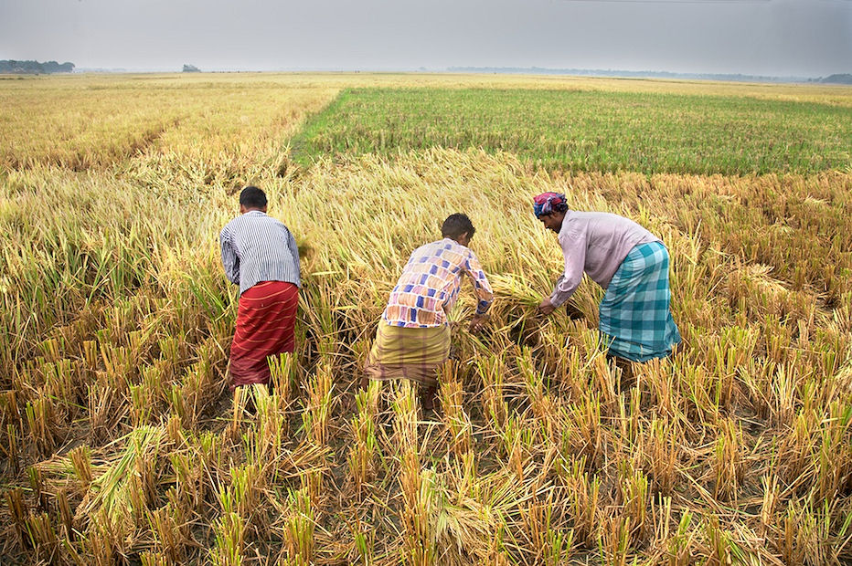
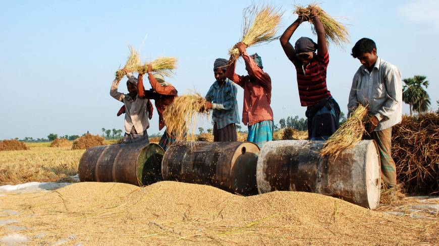
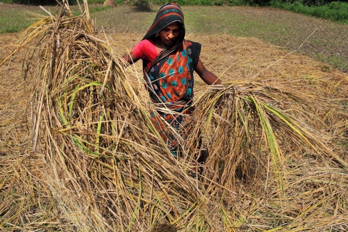
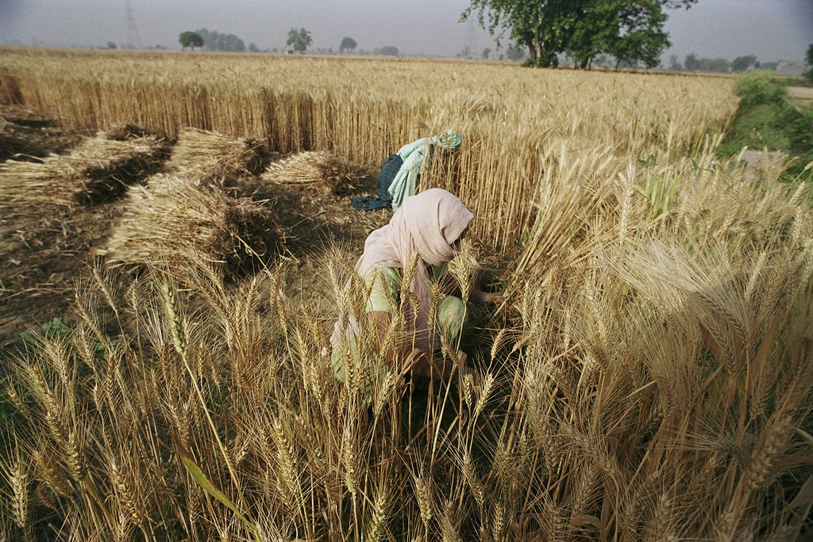
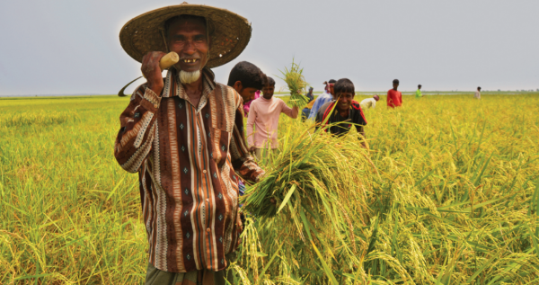
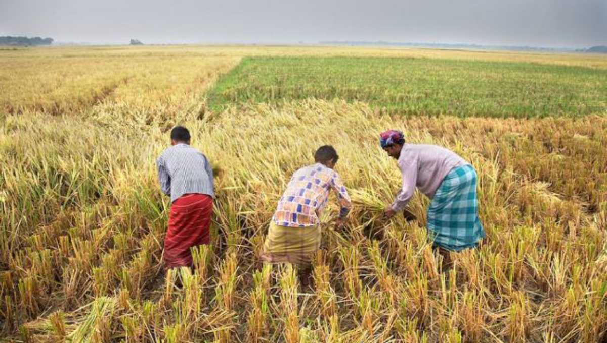